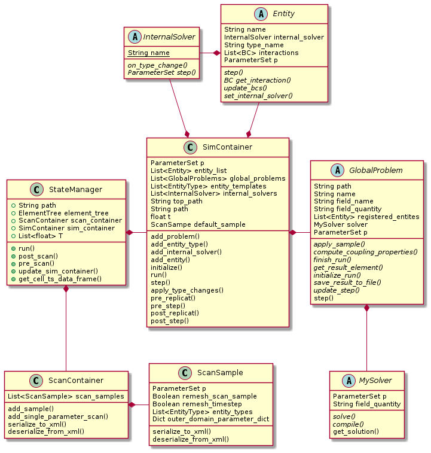
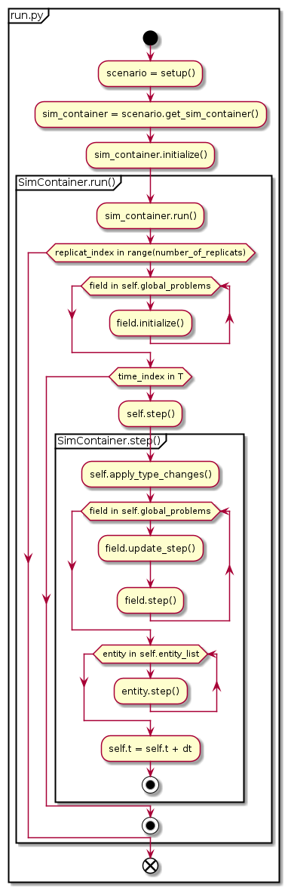
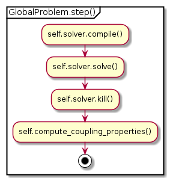
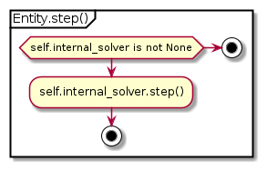

Time series simulation with SimContainer¶
The simulation of a single timeseries (with replicats) is handled by SimContainer.
At its core it is an aggregate of the Entity, EntityType, ParameterSet,
GlobalProblem and InternalSolver classes,
to bundle simulation objects and provide an abstract interface for higher level code.
The SimContainer object can be build manually or, usually, retrieved from a scenario object.
The UML diagram (Fig. 1) illustrates the code structure around SimConatiner
and its relation to StateManager.
The class hierarchy behind the abstract base classes has been omitted for clarity,
but that is where much of the actual implementation can be found.

Fig. 1 Coarse package class hierarchy involved in the simulation. The main classes are
SimContainer and StateManager,
that manage timeseries and parameter scan simulation. The implementation details for different problems and numerical
frameworks are hidden in abstracts classes (denoted with A in their class diagram),
that represent the actual simulation objects (Entity, GlobalProblem, MySolver,
InternalSolver).
Concrete implementations for a given mathematical/numerical form can be found in subclasses
that derive from the abstract base class (ABC).¶
When the SimContainer.run() method is invoked,
the basic simulation loop starts. It executes the pre/post hooks but primarily calls the step
method for each timestep. SimContainer.step() iterates over all global problems (a.k.a fields),in turn calling their step methods,
and then over all entities.
The program flow is illustrated in the activity diagram (Fig. 2) and pseudo code snippet (Listing 1) below.

Fig. 2 Activity diagram illustrating the basic simulation loop.
Filled circles denote method return, crossed circles denotes program termination.
The simulation is typically invoked from within a script like python file (here called run.py).
The task of “running the simulation” is decomposed into modular objects. From invoking run() on the SimContainer
object, the call is handed down through a series of method calls
(SimContainer.run() -> SimContainer.step() -> GlobalProblem.step() and Entity.step()),
where at each layer the call maybe embedded into one or more loops, to enable timestepping and replicat simulations.¶
SimContainer.run() and step()¶def run(self, T, number_of_replicats = 1):
for replicat_index in range(number_of_replicats):
for field in self.global_problems:
field.initialize_run(self.p, self.top_path, self.path, self.get_tmp_path())
self._pre_replicat(self, 0 + 1, replicat_index, T[0 + 1], T) # internal use
self.pre_replicat(self, 0 + 1, replicat_index, T[0 + 1], T) # user defined
self.t = T[0]
for time_index, t in enumerate(T[1:]):
self._pre_step(self, time_index + 1, replicat_index, T[time_index + 1], T)
self.pre_step(self, time_index + 1, replicat_index, T[time_index + 1], T)
dt = t - T[time_index]
self.step(dt, time_index, replicat_index)
self._post_step(self, time_index, replicat_index, t, T)
self.post_step(self, time_index, replicat_index, t, T)
self._post_replicat(self, T[-1], replicat_index, t, T)
self.post_replicat(self, T[-1], replicat_index, t, T)
def step(self, dt, time_index , replicat_index):
self.apply_type_changes(replicat_index)
for field in self.global_problems:
tmp_path = self.get_tmp_path()
field.update_step(self.p, self.path, time_index, tmp_path)
field.step(self.t, dt, time_index, tmp_path)
for i, entity in enumerate(self.entity_list):
entity.step(self.t, dt)
self.t = self.t + dt
The step methods of GlobalProblem (rather its subclasses) and Entity (same) actually advance
the simulation by one timestep for each global problem (pde-field) and each entity (cell model) respectively.
Global solver¶

Fig. 3 Abstract implementation of the GlobalProblem.step() method. The concrete implementation
is done by subclassing GlobalProblem and MySolver and implementing their abstract mehtods.
The solver is “compiled”, its solve() method invoked
and the coupling properties are computed on each entity from the result.¶
The call to field.step() in Fig. 2
invokes the step() method defined in the GlobalProblem
ABC (Fig. 3). The solver object is a member of the GlobalProblem instance
and must subclass from MySolver. The solver is “compiled”, its solve() method invoked
and the coupling properties are computed on each entity from the result.
Entity Solver¶

Fig. 4 Abstract implementation of the Entity.step() method.
The concrete implementation
is done by subclassing InternalSolver,implementing its abstract mehthods and attaching to the
scenario and entity type.¶
Entity.step() follows a similar pattern as above. If the Entity instance has an
InternalSolver attached its step() method is invoked.
The InternalSolver subclass must be written by the user and handed to the
SimContainer/Scenario instance.
Global-Entity coupling¶
The coupling between entities and fields is iterative and occurs through coupling properties. After a global problem is solved the coupling propertie(s) are calculated for each entity, that interacts with this problem and stored in that entities parameter set, where it can be accessed by the entities internal solver. However, there is now strong formalism associated with coupling properties, the are simply entries in entity.p like any other parameter and are referenced by name.